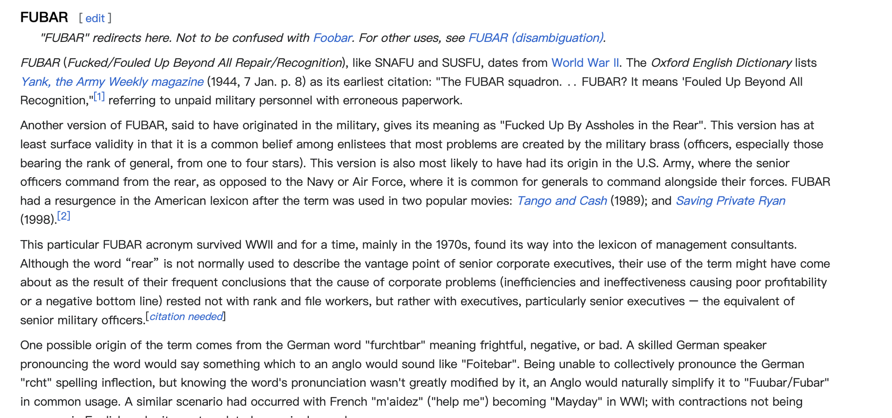

如果你是一位程序员，一定在编程教材或网上文档的示例代码中见到过使用 foo、bar 这两个词为变量命名。如：
1 | String foo = "Hello, "; |
或者：
1 | #include <stdio.h> |
foobar 的由来
foo、bar 的来源究竟是什么呢？我尝试查了一些资料来解答这个问题。
对于 foobar 的来源，主要有两种解释：
1. FUBAR 缩写词
这一派认为，foo和bar源自美国陆军二战缩写 FUBAR，“Fouled Up Beyond All Recognition”（操蛋到无法修复）。

2. 电子学术语
foo 表示电子学中反转的信号，bar 表示一个低电平有效的数字信号。
为什么使用 foo和 bar
1. 约定成俗
老一辈的程序员们很喜欢在示例代码中使用这两个词作为变量名，发展到后来甚至已经成为 C 和 UNIX 文化的一部分。
在 linux/lib/test_debug_virtual.c 中，使用 foo 作为结构名称，使用 bar 作为内部字段名称。：
1 | struct foo { |
在 linux/tools/testing/selftests/bpf/test_cgroup_attach.c 中将临时文件夹命名为 foo 和 bar：
1 | #define FOO "/foo" |
2. 易于查找
这个解释虽然有些牵强，但也说的通。
foo 和 bar 很容易在代码块中发现，这使得在用眼睛浏览和扫描代码时可以轻松找到和替换。
结论
foo 和bar 在代码中无任何实际含义，在教学或写文档过程中为了快速说明一个特性、操作符的使用方法，同时作者又不想大费周章的想一个恰当的变量名，就统统使用 foo、bar 来表示一些无意义的变量，久而久之这个习惯就流传了下来。
这两个词在这种用法中没有任何意义，仅仅表示一个变量占位符，就像代数中使用的字母 x 和 y 一样。
最后
如果你在示例代码中看到 foo、bar，需要明白这个变量的名称是不重要且随意的，将重点放在后边的代码或者整体逻辑上即可。foo 和 bar 作为两个最常用的临时变量，它们实际上并没有任何词语含义，通常为了方便起见，用来代替更准确的名称。
foo 和 bar 比其他临时变量更受欢迎，因为它们的受欢迎，而且它们不可理解的性质使它们很容易被精确定位。
也因为 foobar 这个术语非常流行，后来有一个 Windows 上的音频播放器将自己命为 foobar2000。